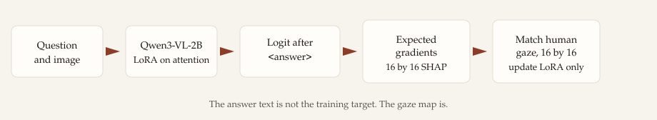
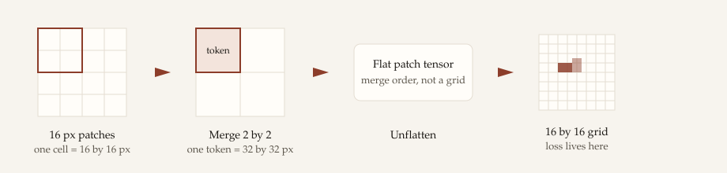
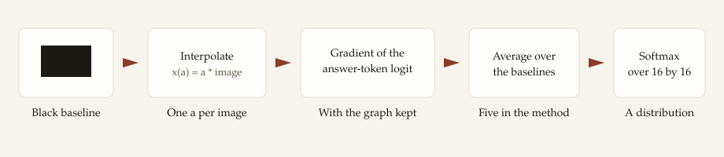
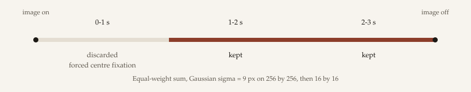
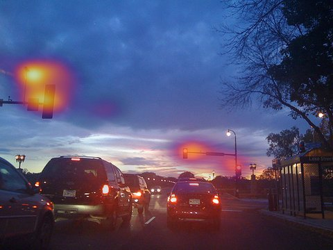

Right for the right reasons
A visual question-answering model trained so that its SHAP attribution over the image matches the regions people looked at while answering the same question.
Stage 1 aligns a differentiable SHAP map from Qwen3-VL-2B with human fixation heatmaps from AiR-D. A reasoning chain and the final answer come afterwards. The question under test is the method: whether gaze supervision before the reasoning chain grounds the answer in the regions that actually carry it.
Code and the training pipeline: Acul01/GazeSHAP-VQA.
What “better” has to beat
On the held-out test split a uniform map scores AUC-Judd 0.500. A Gaussian at the image centre already scores 0.724. Human agreement between observers is 0.895. A result only counts inside that band, and it has to keep answer accuracy.
Method
Stage 1 does not train the answer. It trains the model so that the regions supporting the answer are the regions people looked at.
The supervision signal is a SHAP map [1] for the logit of the answer’s first token, matched to the human fixation map recorded on the same question [2]. A reasoning chain comes later, and is not part of this stage.
Pipeline

What is trained
The backbone is Qwen3-VL-2B-Instruct
[3]. Only low-rank adapters
[4] on the attention projections
q_proj, k_proj, v_proj and
o_proj are updated. The vision tower stays frozen. With
1,422 questions, full fine-tuning is not the setting.
Attention runs in the eager implementation, and gradient checkpointing is off. The loss is a function of a gradient, so the backward pass has to go through that gradient a second time. Fused attention kernels have no rule for that second backward, and checkpointing throws the graph away. The wrapper refuses to start if either guard is broken.
Where the attribution is taken
The Stage 1 prompt ends on the opening <answer> tag.
The answer is written into the sequence after that tag, so the next
position is the first token of the answer. Attribution targets the
logit of that token. It does not target the finished string, and there
is no language-model loss in this stage.
From pixels to the 16×16 grid

The processor does not hand the model an image tensor. Each row of
pixel_values is one patch, and the rows are ordered in
merge windows rather than left to right. A direct reshape into a grid
scrambles the image. The map is unflattened with the inverse of that
permutation, then pooled to 16×16, the resolution of the gaze target.
Pixel budgets are counts of visual tokens times 32×32. The method uses
between 256 and 512 visual tokens.
The first cluster run lowers that budget to 64–128 tokens and uses two baselines instead of five, so the double backward fits in GPU memory. That is a run setting. The method above is unchanged.
Expected gradients

A black image is the baseline: no visual evidence. For each sample an interpolation coefficient is drawn, the baseline is moved toward the real patches, and the gradient of the answer logit with respect to those patches is taken. Averaging five such gradients, multiplying by the distance from the baseline, and summing inside each patch gives one score per patch. After unflattening and pooling, a softmax turns the 16×16 scores into a distribution.
The implementation does not call Captum. Captum’s gradient SHAP runs
backward() without keeping the graph, so the attribution
becomes a constant. The loss can fall in the log while the LoRA weights
receive no gradient. The same sum is written out here with the graph
kept, which is what lets the gaze loss train the adapters.
The gaze map

The question is read before the image appears. When the image comes on, the experiment forces the first fixation to the centre of the screen, so the 0–1 s bin is mostly that setup. It is dropped. Fixations in the 1–2 s and 2–3 s bins are drawn as Gaussians of 9 pixels, about one degree, on a 256×256 map, summed with equal weight, and averaged down to 16×16. Questions and answers come from GQA [8], photographs from Visual Genome [9]. How the set was cut is on the Data tab.
Image 2371269

Gaze, seconds 1–3. Question: what device is on the left-hand traffic signal?
Loss
Both maps are distributions over the same 16×16 cells. The loss is a weighted squared error plus a Kullback–Leibler term,
L = weighted MSE(SHAP, gaze; α = 1.1) + λKL · KL(gaze ‖ SHAP), with λKL = 0.1.
The weight 1 / (α − gaze) is larger where people looked, so a miss on a fixation costs more than a miss on the empty background. KL(gaze ‖ SHAP) is large where people looked and the model put almost no mass. At 16×16 the weighted error lands near 10−4 and the weighted KL near 0.15, so under these default weights the run is driven by the KL term.
What the numbers mean
After each epoch the validation split is scored with AUC-Judd, the correlation coefficient, and KL [10]. On the test split a uniform map scores AUC-Judd 0.500. A Gaussian at the image centre already scores 0.724. Agreement between human observers is 0.895. A gain counts only above 0.724. KL can move the other way: the centre prior is worse on KL than the uniform map, so a falling KL is not by itself a better gaze match.
What this stage does not do
The model is not trained to produce the answer, and the test split is
not used for checkpointing. The intended second stage samples a
<think> / <answer> chain and
updates it with group relative policy optimisation
[11]. That stage is not built yet. Stage 1 only
asks whether the attribution can be pulled onto the gaze map.
References
- Lundberg, S. M. and Lee, S.-I. A unified approach to interpreting model predictions. NeurIPS, 2017.
- Ross, A. S., Hughes, M. C., and Doshi-Velez, F. Right for the right reasons: Training differentiable models by constraining their explanations. IJCAI, 2017.
- Qwen Team. Qwen3-VL technical report. arXiv:2511.21631, 2025.
- Hu, E. J., Shen, Y., Wallis, P., Allen-Zhu, Z., Li, Y., Wang, S., Wang, L., and Chen, W. LoRA: Low-rank adaptation of large language models. ICLR, 2022.
- Erion, G., Janizek, J. D., Sturmfels, P., Lundberg, S. M., and Lee, S.-I. Improving performance of deep learning models with axiomatic attribution priors and expected gradients. Nature Machine Intelligence, 3:620–631, 2021.
- Sundararajan, M., Taly, A., and Yan, Q. Axiomatic attribution for deep networks. ICML, 2017.
- Chen, S., Jiang, M., Yang, J., and Zhao, Q. AiR: Attention with reasoning capability. ECCV, 2020.
- Hudson, D. A. and Manning, C. D. GQA: A new dataset for real-world visual reasoning and compositional question answering. CVPR, 2019.
- Krishna, R., Zhu, Y., Groth, O., Johnson, J., Hata, K., Kravitz, J., Chen, S., Kalantidis, Y., Li, L.-J., Shamma, D. A., Bernstein, M. S., and Fei-Fei, L. Visual Genome: Connecting language and vision using crowdsourced dense image annotations. International Journal of Computer Vision, 123:32–73, 2017.
- Bylinskii, Z., Judd, T., Oliva, A., Torralba, A., and Durand, F. What do different evaluation metrics tell us about saliency models? IEEE Transactions on Pattern Analysis and Machine Intelligence, 41(3):740–757, 2019.
- Shao, Z., Wang, P., Zhu, Q., Xu, R., Song, J., Zhang, M., Li, Y. K., Wu, Y., and Guo, D. DeepSeekMath: Pushing the limits of mathematical reasoning in open language models. arXiv:2402.03300, 2024.
Data
Question-conditioned eye tracking on everyday scenes. One map per question, not per image.
Sources
Images are Visual Genome photographs under CC BY 4.0, used here via GQA. Publishing a gaze overlay on them is allowed if Visual Genome, GQA and AiR-D are credited. The AiR-D hold-out split (319 images, 406 questions) still has no public eye-tracking, so it is not part of this set.
How a trial was recorded
- The question is shown first. The participant reads it for as long as they want.
- They press a button. The image appears for exactly three seconds, centred, spanning 30 degrees of visual angle.
- Gaze during those three seconds is recorded with a Vive Pro Eye. Fixations are extracted with the Cluster Fix algorithm.
- Then they answer. Twenty people took part; each question was answered by ten of them.
The first second is discarded. The experiment forces the opening fixation onto the centre of the screen, so that second mostly records the setup rather than the question. Training uses the 1–2 s and 2–3 s bins. Each fixation is drawn as a Gaussian of 9 px (about one degree) on a 256×256 map, then averaged down to the 16×16 grid the model is trained against.
What we kept
AiR-D ships 1,454 fixation maps. The set used here is the intersection that also has temporal bins, scanpaths, consolidated answers and a matching GQA question. Splits are cut by image, 70/10/20, seed 42. A question-level split would show the model the same scene at training time and at test time.
Human accuracy
Question types
Structural
Semantic
Examples
Six questions from the set. The heatmap is the aggregated gaze of the ten participants during seconds 1–3, drawn on the photograph. It is not a model prediction.